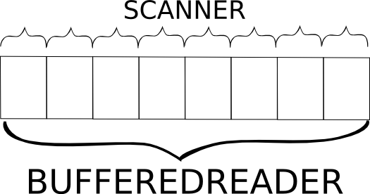

Unidad 1
Entrada y salida estándar, Scanner, Print Writter, ejercicios
Gui vs Entrada/Salida Estandar

Entrada Estandar
Scanner sc = new Scanner(System.in);
//Leer una linea completa
String a = sc.nextLine();
//Leer una palabra hasta un espacio
String b = sc.next();
//Leer un entero
int a = sc.nextInt();
Salida Estandar
System.out.print("Texto sin salto de linea");
System.out.println("Salto de linea");
double pi = 3.141592654;
System.out.printf("%.4f\n", pi);
//3.1416
Printf
int a = 5;
double b = 3.141592654;
String c = "Hola mundo";
System.out.printf("Int: %d Double: %f String: %s\n", a,b,c);
//Int: 5 Double: 3.141593 String: Hola mundo
System.out.printf("%04d %.3f", a,b);
//0005 3.142
Estructura de un ejercicio tipo maratón
Enunciado: Dados dos numeros a y b, retornar a+b.
Entradas: Un numero n indicando el número de casos de prueba. Luego n lineas con dos enteros a y b separados por espacios.
Salidas: Para cada caso imprimir una linea con a+b
| Entradas | Salidas |
| 3 1 2 5 9 10 14 |
3 14 24 |
Estructura de la solución
import java.util.*;
public class Main {
public static void main (String[] args) {
Scanner sc = new Scanner(System.in);
int n = sc.nextInt();
while(n > 0){
System.out.println(sc.nextInt()+sc.nextInt());
n--;
}
}
}
Tipos de entradas
Entrada individual
Un solo caso de prueba.
Scanner sc = new Scanner(System.in);
System.out.println(sc.nextInt()+sc.nextInt());
Número de casos de prueba
Primero se indica cuantos casos de prueba se evaluaran, y posteriormente se indica cada caso.
Scanner sc = new Scanner(System.in);
int n = sc.nextInt();
while(n > 0){
System.out.println(sc.nextInt()+sc.nextInt());
n--;
}
EOF
Se evaluan varios casos de prueba, pero no se indica cuantos. El programa debe leer mientras aun queden datos por evaluar.
Scanner sc = new Scanner(System.in);
while(sc.hasNext()){
System.out.println(sc.nextInt()+sc.nextInt());
}
Optimizando Scanner
https://github.com/Meyito/UFPS-ProgramacionCompetitivaScanner vs BufferedReader
¿Como usarlo?
import java.util.*;
import java.io.*;
public class Main {
public static void main (String[] args) throws IOException{
Scanner sc = new Scanner();
int a = Integer.parseInt(sc.next());
int b = Integer.parseInt(sc.next());
System.out.println(a+b);
}
static class Scanner{
//Copiar código del link
}
}
Scanner Optimizado: Métodos
| Método | Función |
|---|---|
| nextLine() | Lee el renglón entero hasta llegar a un salto de linea. Retorna un string. |
| next() | Lee de la entrada hasta encontrar un espacio, un salto de linea. Retorna un string. |
| hasNext() | Indica si hay mas datos esperando por ser leídos. Retorna un boolean. |
Optimizar Salidas
PrintWriter bw = new PrintWriter(System.out);
bw.print("Texto");
bw.println("Texto");
bw.printf("Texto", parametro);
bw.flush();
¡Resolvamos un problema!
G - Extreme Sort
http://gcpc.nwerc.eu/problemset_2015.pdfJohn likes sorting algorithms very much. He has studied quicksort, merge sort, radix sort, and many more.
A long time ago he has written a lock-free parallel string sorting program. It was a combination of burstsort and multi-key quicksort. To implement burstsort you need to build a tree of buckets. For each input string you walk through the tree and insert part of the string into the right bucket. When a bucket fills up, it "bursts" and becomes a new subtree (with new buckets).

Well, enough about the past. Today John is playing with sorting algorithms again. This time it’s numbers. He has an idea for a new algorithm, “extreme sort”. It’s extremely fast, performance levels are OVER NINETHOUSAND. Before he tells anyone any details, he wants to make sure that it works correctly.
Your task is to help him and verify that the so-called extreme property holds after the first phase of the algorithm. The extreme property is defined as min (xi,j ) ≥ 0, where

Input: The first line contains a single integer N (1 ≤ N ≤ 1024). The second line contains N integers a1 a2 . . . aN (1 ≤ ai ≤ 1024).
Output:Print one line of output containing “yes” if the extreme property holds for the given input, “no” otherwise
| Input | Output |
|---|---|
| 2 1 2 |
yes |
| 4 2 1 3 4 |
no |
Solución
Scanner sc = new Scanner();
PrintWriter bw = new PrintWriter(System.out);
int N, anterior, actual;
boolean flag = true;
N = Integer.parseInt(sc.next());
anterior = Integer.parseInt( sc.next() );
for(int i = 1; i <N; i++){
actual = Integer.parseInt( sc.next() );
if(actual < anterior){
flag = false;
}
anterior = actual;
}
if(flag){
bw.println("yes");
}else{
bw.println("no");
}
bw.flush();